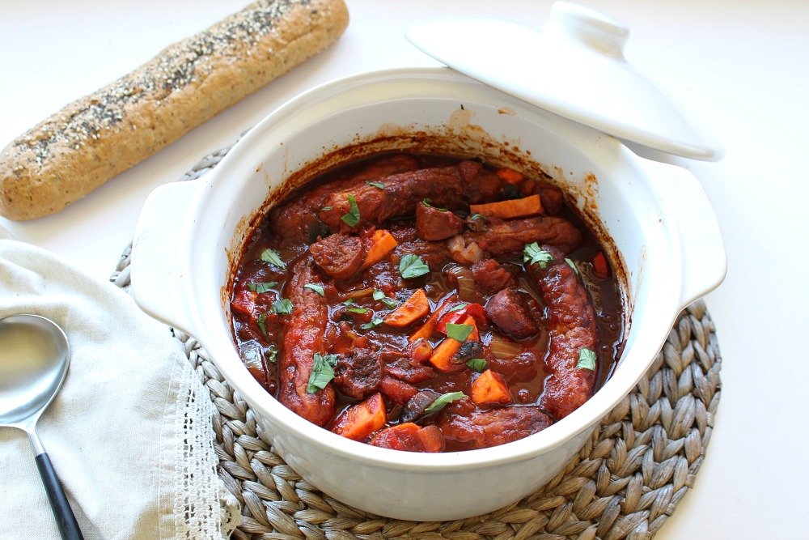

Spicy Sausage Casserole Recipe
Home

Description
There is nothing I love more than a recipe that is easy, this sausage and chorizo casserole is quick and one the whole family will love. As a busy parent, it’s so important for us to come together at dinner time and really get a chance to catch up and share our day. The last thing I want to do is slave over a complex recipe and waste that precious time at the table with my family. Like all my recipes on Let’s Talk Mommy, they are super easy, all family friendly and quick to throw together. This helps make more family time at the table together.
Ingredients
- 8 in. chorizo sausage sliced into 1/2 in. rounds
- 3 small Independent sweet potatoes
- 1 onion finely chopped
- 1 clove of garlic finely chopped
- 1 small chilli finely chopped
- 1 large Independent flat mushroom cut into quarters
- 8 Butchers choice Thick Pork Sausages
- 1 x 14oz tin Independent chopped tomatoes in tomato sauce
- 1 jar Independent tomato and chilli sauce
- Rioja red wine to cover all ingredients in pan
- 2 tbsp tomato purée
- Salt and pepper to taste
- chopped basil leaves to garnish
Steps
- Preheat oven to 200 C degrees
- Cut chorizo and fry in a dry frying pan until golden
- Add onion, garlic, chilli, mushrooms, pepper and sauté until soft and tender
- Grill the sausages until evenly brown
- Peel and slice sweet potatoes in half then in half moon shaped pieces
- Add vegetables and sausages to a casserole dish
- Add in the tinned tomatoes, jar of tomato and chilli sauce, tomato puree and pour the wine on top until all the ingredients are covered
- Place casserole lid on and bake in the oven for 15-20 minutes
- Season to taste and serve with crusty bread